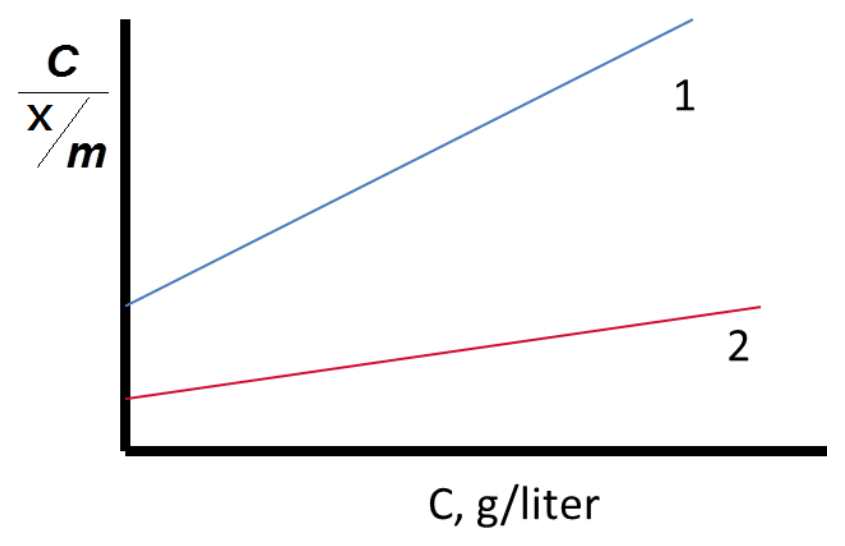
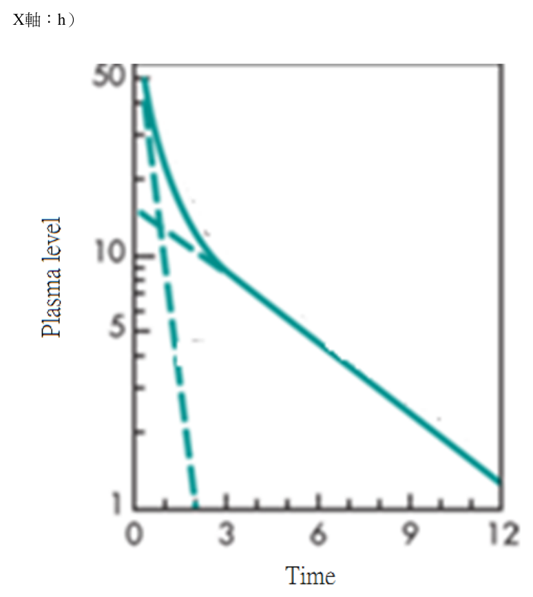
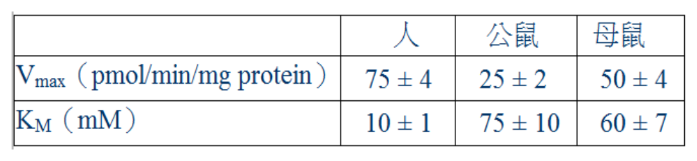
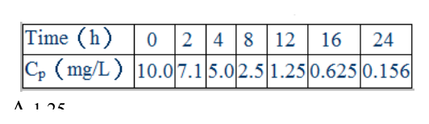
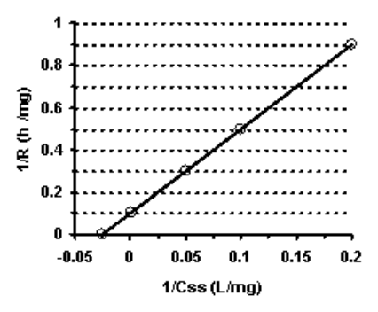

開卷有益 ／
藥師 ／ 藥劑學與生物藥劑學 ／ 109 年第 2 次109 年第 2 次藥師藥劑學與生物藥劑學試題與答案
這一頁是民國 109 年第 2 次藥師藥劑學與生物藥劑學的整份歷屆試題，共 80 題，題目與標準答案出自考選部「國家考試試題及測驗式試題答案」開放資料。以下逐題列出題幹、選項與答案；要計時作答或記錄成績，請用線上練習。
考選部原始場次代碼：109100
線上作答這一科 →
全部 80 題
第 1 題
已知某藥物以一階次動力學降解，且其在37℃的降解速率為27℃時的10倍，此藥物之活化能為多少kcal/mole？
（A） 456.6（B） 42,502（C） 177,836（D） 425,019本題送分，無標準答案
第 2 題
一藥物（3% w/v）以零階次動力學降解，其反應速率為0.02 mg/mL/h，此藥物的半衰期為多少天？
（A） 1.1（B） 1.4（C） 31.3（D） 34.7答案：（C）
第 3 題
中華藥典第八版所記載之檸檬酊，藥品成分含量應符合之規定標準為何？
（A） 每100 mL代表藥品5 g之效能（B） 每100 mL代表藥品10 g之效能（C） 每100 mL代表藥品20 g之效能（D） 每100 mL代表藥品50 g之效能答案：（D）
第 4 題 待校
依中華藥典規定，有關流浸膏劑（fluidextracts）之敘述，下列何者錯誤？
（A） 法定之流浸膏劑，均係以滲漉法製備（B） 每mL所含之有效成分相當於標準生藥1 g（C） 須用低溫蒸發濃縮，濃縮時之溫度應保持在70℃以下（D） 若須測定其含量，則於滲漉第三份生藥時，僅收集滲出液420 mL答案：（C）
第 5 題
依中華藥典，有關氫氧化鈣溶液（calcium hydroxide solution）之敘述，下列何者錯誤？
（A） 本品每100 mL所含Ca(OH)2於25℃時應在140 mg以上（B） 本品於製造時取氫氧化鈣3 g加入適量蒸餾水，共製成1,000 mL（C） 本品如溶液之溫度增高，則氫氧化鈣之含量也會增加（D） 別名為lime water答案：（C）
第 6 題
依中華藥典，有關單糖漿（simple syrup）之敘述，下列何者錯誤？
（A） 含蔗糖85% w/v（B） 可用加熱溶解法製備（C） 可用滲漉法製備（D） 比重約為1.133答案：（D）
第 7 題
硝酸銀與氯化鈉水溶液的沉澱反應，若氯化鈉為過量，則沉澱質粒將帶何種電荷？
（A） Ag+（B） Na+（C） Cl-（D） NO3-答案：（C）
第 8 題
所謂金數是指為防止因加入甲cm3之乙%氯化鈉而使丙cm3的紅色金膠溶體凝聚變為藍色，所需的乾燥聚合物的 最小重量單位為丁，則下列何者正確？
（A） 甲是10（B） 乙是10（C） 丙是1（D） 丁是g答案：（B）
第 9 題
將邊長1 cm的正立方體切割成邊長0.1μm相同大小的正立方體，下列敘述何者正確？
（A） 比表面積是6,000 cm-1（B） 可切割成109個邊長0.1μm的正立方體（C） 比表面積變為原來的10,000倍（D） 切割後的粒徑大小屬於膠體答案：（D）
第 10 題
預製備懸浮液當顆粒與溶媒密度差增加3倍時，沉降速率增加多少倍？
（A） 0.09倍（B） 1倍（C） 3倍（D） 9倍答案：（C）
第 11 題
6%皂土（bentonite）分散於水中時，靜置後會形成下列何者？
（A） gel（B） suspension（C） emulsion（D） lotion答案：（A）
第 12 題
急診病患需利用吸附劑去毒，下圖為24℃時相同重量吸附劑下，利用Langmuir作圖，下列敘述何者正確？ x：吸附溶質的量（mg）；m：吸附劑的量（g）

（A） 選吸附劑1有較大單層吸附極限量（B） 選吸附劑2有較大單層吸附極限量（C） 選吸附劑1有較大吸附速率（D） 選吸附劑2有較大吸附速率答案：（B）
第 13 題
下列何者是利用特定油：水：acacia比例下，acacia與油先混合後再與水混合之製備方法？
（A） continental method（B） English method（C） wet gum method（D） bottle method答案：（A）
第 14 題
一懸浮液在USP溶離器進行溶離，藥品分別於1、2、6、8小時溶離出1、2、6、8 mg，則符合下列何種釋放模 式？
（A） 0級（B） 1級（C） 2級（D） 3級答案：（A）
第 15 題
眼用懸液劑其粒徑至多不得大於多少μm？
（A） 0.5（B） 1（C） 5（D） 10答案：（D）
第 16 題
下列何者可測量質粒之體積？
（A） air permeability（B） Coulter Counter（C） microscopic method（D） sedimentation method答案：（B）
第 17 題
有關局部用藥經皮吸收的影響因素，下列敘述何者錯誤？
（A） 分子量在100～800間，並有適當的脂溶性及水溶性的藥物分子，有機會利用經皮路徑進入體內（B） 極性藥物傾向走transcellular route進入皮膚（C） 藥物給與到角質層較薄的部位可有比較好的經皮吸收（D） 一般而言，非離子態藥物比離子態藥物有較佳的經皮吸收效果答案：（B）
第 18 題
根據中華藥典第八版軟膏劑之規定，有關軟膏的敘述，下列何者錯誤？
（A） 眼用軟膏應置於滅菌之緊密容器內，於4℃以下貯存（B） 所製備之軟膏如因氣候改變，軟膏之質地可能過軟或過硬而不適用，則所用蜂蠟、羊毛脂、鯨蠟或液體石蠟 等之量可酌予增減（C） 烴類基劑雖與皮膚有較長的接觸時間，但其吸收量並不多（D） 一般軟膏劑應置密蓋容器內，於30℃以下貯存答案：（A）
第 19 題
下列何者為適合用於烴類軟膏基劑的研合劑（levigating agent）？
（A） glycerin（B） mineral oil（C） PEG 400（D） propylene glycol答案：（B）
第 20 題
以可可脂（cocoa butter）製成之栓劑貯存溫度不得高於攝氏幾度？
（A） 15（B） 20（C） 25（D） 30答案：（D）
第 21 題
有關可可脂之敘述，下列何者正確？
（A） 是三醯甘油的混合物，大約含有1/3月桂酸（B） 加入過多水分，儲存時易發生酸敗不安定（C） 加入chloral hydrate會降低固化時間（D） metastable form可可脂的凝固點約24℃答案：（B）
第 22 題
以熔合法製備可可脂栓劑時，其溫度宜維持在何範圍最適當？
（A） 24～28℃（B） 30～33℃（C） 34～35℃（D） 37～40℃答案：（C）
第 23 題
若欲將10%藥物水溶液調配成均質之軟膏劑，下列軟膏基劑中，何者較不適合？
（A） 親水軟石蠟（hydrophilic petrolatum）（B） 含6%丙二醇之聚乙二醇軟膏劑（C） 含10%無水羊毛脂之軟石蠟（D） aquaphor答案：（B）
第 24 題
製作氧化鋅軟膏時，氧化鋅粉末在加入軟膏基劑之前，應先與下列何種成分研合？
（A） 甘油（B） 丙二醇（C） 液體石蠟（D） 冬青油答案：（C）
第 25 題
White ointment是屬於下列何種類型之軟膏基劑？
（A） oleaginous ointment base（B） absorption ointment base（C） emulsion ointment base（D） water-soluble ointment base答案：（A）
第 26 題
建立IVIVC（in vitro-in vivo correlations）的關係是開發下列何種劑型時最屬關鍵之步驟過程？
（A） extended-release（B） immediate-release（C） sublingual-release（D） buccal-release答案：（A）
第 27 題
下列黏合劑何者最不溶於水？
（A） alginate（B） ethylcellulose（C） methylcellulose（D） sodium carboxymethylcellulose答案：（B）
第 28 題
依中華藥典規定，口腔錠（buccal tablets）作崩散度試驗時，應在多少小時內崩散？
（A） 1（B） 2（C） 4（D） 8答案：（C）
第 29 題
崩散度試驗是指錠劑必須在一定時間內崩解，且所產生的粒子要能通過幾號篩網？
（A） 10（B） 20（C） 30（D） 40答案：（A）
第 30 題
下列何者會產生bubble action而幫助錠劑崩散促進溶離？
（A） chewable tablet（B） dispensing tablet（C） effervescent tablet（D） rapidly disintegrating tablet答案：（C）
第 31 題
下列何種特性的藥物最不適合或不需要製備成延長釋放性（extended-release）劑型？
（A） 吸收速率極慢者（B） 治療指數適中者（C） 使用劑量低者（D） 胃腸道皆吸收者答案：（A）
第 32 題
Adalat CR®是含有nifedipine的OROS（oral release osmotic system）劑型，下列敘述何者錯誤？
（A） 藥物釋出速率為常數（B） 蕊錠包覆一層半透膜（C） 滲透壓啟動藥物釋出（D） 蕊錠是單層錠的設計答案：（D）
第 33 題
依據中華藥典第八版，甘草流浸膏係以甘草粗粉按照流浸膏劑製法(1)來製備，依此選用之甘草粗粉應可完全 通過第幾號標準試驗篩？
（A） 4（B） 8（C） 10（D） 20答案：（D）
第 34 題
明膠為製備明膠膠殼時主要之材質，有關明膠之使用或其特性，下列何者錯誤？
（A） 宜選用來自豬皮或豬骨頭的單一來源之明膠為佳，若混用時膠殼較易破碎（B） 明膠原料之粒徑應適當調配，粗粉及細粉皆不宜太多（C） 明膠原料內若含有磷酸鈣雜質太多時易導致膠殼製造時之困難度增加（D） 明膠應符合膠凝結力（bloom strength）及微生物限量之規定答案：（A）
第 35 題
難溶性固體藥物之晶型會影響其生體可用率，就下列相關性質比較何者最正確？
（A） 口服novobiocin 散劑後之最高血中濃度：amorphous form小於crystal form（B） 口服tolbutamide散劑後之降血糖作用：sodium salt小於其free base（C） 體外溶離速率：anhydrous caffeine大於caffeine hydrate（D） 口服griseofulvin散劑後之最高血中濃度：micronized particle（2.6 µm）和 10 µm particle一樣答案：（C）
第 36 題
固體化合物之晶型會影響藥物之物化性質及生體可用率，下列敘述何者最正確？
（A） 口服ampicillin時，選用其trihydrate form通常比anhydrous form較易產生藥效（B） 口服chloramphenicol palmitate時，選用其crystalline form通常比 amorphous form較易產生藥效（C） sodium penicillin G供肌肉注射時，其crystalline form通常可產生令人滿意之藥效（D） sodium penicillin G 之amorphous form比其crystalline form有較好之化學安定性答案：（C）
第 37 題
男性使用下列那一個藥物時，不可將精液射入孕婦或準備受孕女性體內？
（A） penicillin（B） terbutaline（C） finasteride（D） digoxin答案：（C）
第 38 題
有關注射劑中添加sulfur dioxide 為抗氧化劑時，其含量上限為多少百分比？
（A） 0.01（B） 0.1（C） 0.2（D） 0.5答案：（C）
第 39 題
灌洗用與透析用滅菌溶液之容量超過1公升者，其容器上應標示下列何者？
（A） 不得經口服用（B） 不得供動物使用（C） 不得供靜脈注射用（D） 僅供醫護人員使用答案：（C）
第 40 題
注射劑使用何種類型的玻璃容器安定性最佳？
（A） Type I（B） Type II（C） Type III（D） Type IV答案：（A）
第 41 題
有關無菌製劑注射途徑和可注射量的關係，下列敘述何者錯誤？
（A） intraspinal route可一次注射8 mL（B） intramuscular route可一次注射6 mL（C） subcutaneous route可一次注射1.3 mL（D） intradermal route可一次注射0.1 mL答案：（B）
第 42 題
下列何種劑型最適合以高壓蒸氣進行滅菌？
（A） 溶液劑（B） 乳劑（C） 懸液劑（D） 軟膏劑答案：（A）
第 43 題
1,000 mL水中含50 g葡萄糖，則水的莫耳分率為多少？
（A） 0.634（B） 0.835（C） 0.995（D） 0.999答案：（C）
第 44 題
有關注射用水（water for injection, USP）之敘述，下列何者錯誤？
（A） 需經過蒸餾或逆滲透法純化（B） 總固體含量不得超過1 mg/100 mL（C） 必須為無菌（D） 必須無熱原答案：（C）
第 45 題
下列何者有助於無菌懸浮液凝膠化？
（A） Tweens（B） sodium metabisulfite（C） ethylenediamine tetraacetic acid（D） lecithin答案：（D）
第 46 題
有關滅菌動力學所定義之「D」值（decimal reduction time-the D Values），係指在某一滅菌條件下，將一微生 物群滅掉若干百分比菌數所需之時間？
（A） 90%（B） 70%（C） 50%（D） 10%答案：（A）
第 47 題
依中華藥典，注射劑直接容器標籤上要求標註事項中，如因標籤面積過小，下列何者不是「至少須註明」之 項目？
（A） 藥名（B） 含量（C） 容量（D） 有效期限答案：（D）
第 48 題
有關無菌產品所使用之玻璃容器的相關規定及敘述，下列何者錯誤？
（A） Type II玻璃適用於乾粉及油溶液（B） Type III玻璃適用於乾粉及油溶液（C） Type II玻璃適用於鹼性緩衝溶液（D） Type I為矽酸硼玻璃答案：（C）
第 49 題
依中華藥典的規定，無菌試驗法（滅菌檢查法）應在何種等級之潔淨環境下進行？
（A） Class 100（B） Class 1,000（C） Class 10,000（D） Class 100,000答案：（A）
第 50 題
某降血脂藥具線性動力學一室模式，主要排除途徑為肝與腎，靜脈注射400 mg後，從尿液收集原型藥物總量 為320 mg，若該藥物的腎排除速率常數為0.80 h-1，則此藥的排除半衰期為多少小時？
（A） 0.50（B） 0.69（C） 1.00（D） 1.38答案：（B）
第 51 題
給藥後尿中藥物累積排泄量（Y軸）對其血中藥物濃度－時間曲線下面積（AUC）（X軸）作圖，經線性迴歸 後所得直線的斜率，代表此藥物何種藥物動力學參數？
（A） 總排除速率常數（B） 總清除率（C） 腎排除速率常數（D） 腎清除率答案：（D）
第 52 題
有關藥物跨膜（transmembrane）運輸機制的敘述，下列何者最正確？
（A） 小胞運輸（vesicular transport）耗能，且需靠載體（B） 細胞間轉運（paracellular transport）耗能，且僅能運送脂溶性分子（C） 促進性擴散（facilitated diffusion）不耗能，且不靠載體之運輸方式（D） 被動擴散（passive diffusion）不耗能，且不靠載體之運輸方式答案：（D）
第 53 題
某線性二室模式藥物，經靜脈注射600 mg後，其血中藥物濃度經時變化如圖，分布相與排除相之速率常數分 別為1.88、0.24。則此藥物之外插分布體積（extrapolated volume of distribution）為多少L？（Y軸：μg / mL； X軸：h）

（A） 400（B） 125（C） 40（D） 12.5答案：（C）
第 54 題
下列何項conjugation過程，在臨床治療濃度下，最不易呈現非線性動力性質（nonlinear kinetics）？
（A） sulfate conjugation（B） glucuronidation（C） glycine conjugation（D） glutathione conjugation答案：（B）
第 55 題
某抗菌藥物以單劑量6 mg/kg給與一位60公斤的病人，已知在排除相（elimination phase）最後的採血點（t=18 小時）的血漿藥物濃度是0.52 μg/mL，且其排除相半衰期是4小時，則該藥物之AUC18-∞是多少μg．h/mL？
（A） 0.13（B） 3.0（C） 4.8（D） 9.4答案：（B）
第 56 題
已知某藥品在人、公鼠及母鼠的肝微粒體執行代謝實驗後，得相關資訊如下表： 依平均值計算，有關本藥品內生性清除率（intrinsic clearance）的敘述，下列何者正確？

（A） 母鼠最大、人最小（B） 人最大、母鼠最小（C） 人最大、公鼠最小（D） 公鼠最大、人最小答案：（C）
第 57 題
某藥物之排除半衰期為3小時，在體內之動態依循一室分室模式，經由靜脈注射600 mg後血中藥物初濃度為20 mg/L，則其清除率為若干mL/min？
（A） 85（B） 115（C） 145（D） 175答案：（B）
第 58 題
Cephalosporin的半衰期為1小時，以200 mg/h 的靜脈輸注速率給藥，可達穩定濃度35 mg/L，則其分布體積為 若干（L）？
（A） 5.71（B） 8.25（C） 10.1（D） 12.37答案：（B）
第 59 題
某病人食用了大量的蛋與瘦肉後，導致其尿液的酸鹼性產生了變化，下列何者的排泄最不易受此現象影響？
（A） 葡萄糖（B） 麻黃（C） 水楊酸（D） 四環素答案：（A）
第 60 題
下列何者可以於尿液資料中同時求得藥物之排除速率常數（elimination rate constant，k）及腎臟排泄速率常數 （renal excretion rate constant，ke）？
（A） excretion rate method（B） sigma-minus method（C） method of residuals（D） Wagner-Nelson method答案：（A）
第 61 題
下列何種方式可用於評估biopharmaceutics classification system（BCS）中藥品的滲透性（permeability）：①in situ intestinal perfusion study in rats ②in vitro permeation experiments across a monolayer of cultured Caco-2 cells ③in vivo intestinal perfusion studies in humans ④octanol/water partition coefficient
（A） ①②③（B） ②③④（C） ①③④（D） ①②④答案：（A）
第 62 題
某學名藥與原廠藥BE試驗的結果，二者生體可用率並無差異；但學名藥之吸收速率較低。則下列學名藥之參 數的變化何者錯誤？
（A） 較低的 Cmax（B） 較短的 Tmax（C） 較長的 t∞（D） Du∞不變答案：（B）
第 63 題
Wagner-Nelson process可用於建立下列那種 IVIVC（in vitro-in vivo correlations）？
（A） level A correlation（B） level B correlation（C） level C correlation（D） multiple level C correlation答案：（A）
第 64 題
依據國際醫藥法規協和會（ICH）準則Q6A，固體劑型藥品製程品管時，可以進行崩散試驗替代溶離試驗的 首要條件何者正確？
（A） 藥物符合BCS分類特性為低溶解度、高穿透性（B） 藥品在15分鐘內可溶出大於75%的有效成分（C） 藥物溶解媒液的酸鹼值需介在1.2～7.5之間（D） 於胃腸道酸鹼值條件下，藥物的dose/solubility volume需小於250 mL答案：（D）
第 65 題
Leflunomide是類風濕性關節炎治療前驅藥，臨床使用常與cholestyramine併服以避免副作用的產生，可能的機 轉為何？
（A） 增加代謝物濃度，減少膽汁排泄（B） 吸附代謝物，避免腸道中再吸收（C） 鹼化代謝物，促進腎臟過濾排泄（D） 增加脂溶性，避免淋巴循環排除答案：（B）
第 66 題
當修飾釋放劑型（modified-release dosage forms）含有溶解度不佳之主成分時，宜採用下列何種溶離裝置評估 其溶離速率最適合？
（A） paddle method（B） rotating basket method（C） reciprocating cylinder method（D） flow-through-cell method答案：（D）
第 67 題
某藥物在腸道之穿透甚佳且吸收相當好，但其溶解度不佳。若依生物藥劑分類系統（biopharmaceutics classification system）分類，其最可能屬下列何者？
（A） Class 1（B） Class 2（C） Class 3（D） Class 4答案：（B）
第 68 題
鬱血性心衰竭病人給與furosemide時，有可能造成病人藥物作用延遲的主要原因為何？
（A） 吸收減緩（B） 分布體積增加（C） 代謝下降（D） 排泄延長答案：（A）
第 69 題
以phenytoin治療癲癇時，若劑量由300 mg/day增加為350 mg/day，下列敘述何者正確？
（A） 達到穩定狀態的時間增加（B） 穩定狀態濃度隨劑量增加而成比例增加（C） 半衰期縮短（D） 清除率增加答案：（A）
第 70 題
根據表列資料，下列敘述何者正確？
（A） time to reach steady-state: drug B>drug C>drug A（B） infusion rate: drug B>drug A>drug C（C） loading dose: drug A>drug B>drug C（D） volume of distribution: drug A= drug B= drug C答案：（B）
第 71 題
某病人接受phenytoin治療，先後以靜脈注射重複投與兩測試日劑量，分別測得其血漿中穩定狀態濃度如下 圖。今欲將穩定狀態血中濃度維持在12 mg/L，則此時的給藥速率應約為何最適宜（mg/day）？
（A） 360（B） 300（C） 240（D） 180答案：（A）
第 72 題
下列那些體內藥品動態機轉會飽和且會造成非線性藥物動力學的結果？①經酵素作用的藥品代謝 ②腎絲球 過濾 ③血漿蛋白質結合 ④口服高劑量的低溶解度藥品
（A） ①②③（B） ②③④（C） ①②④（D） ①③④答案：（D）
第 73 題
某男性病人52歲，身高163公分，體重103公斤，血漿中肌酸酐濃度（Ccr）為2.5 mg/dL。以Siersback-Nielsen 圖解法估算此病人的肌酸酐清除率（mL/min）。其結果是否與Cockcroft and Gault法所計算出來的數值相當？
（A） 20，相當（B） 29，相當（C） 20，不相當（D） 29，不相當答案：（B）
第 74 題
下列那些基因突變型態會造成體內藥物代謝酵素／輸送蛋白／接受器幾乎完全喪失活性，而造成致命的醫療 風險？①啟動子單核苷酸基因多型性（promoter SNPs） ②早期終止基因密碼子（early stop codons） ③基 因缺失（deletions） ④基因外顯子跳躍（exon skipping）
（A） ①②③（B） ①②④（C） ①③④（D） ②③④本題送分，無標準答案
第 75 題
某藥品主要經由腎臟排泄，在適當取樣時間下當測定之血中藥物濃度高於預期濃度時，最可能的原因為何？
（A） 以控釋劑型替代速放劑型（B） 擬似分布體積增加（C） 腎臟功能衰退（D） 生體可用率不佳答案：（C）
第 76 題
某抗生素在體內遵循線性藥物動力學，當以靜脈快速注射100 mg後之血中濃度（Cp）經時關係如下表。若處 方為每4小時靜脈注射此藥100 mg，則在第四次注射給藥前，最低血中濃度為多少（mg/L）？

（A） 1.25（B） 2.5（C） 5（D） 8.75答案：（D）
第 77 題
已知某藥在體內之排除依Michaelis-Menten動力學，其給藥速率R（mg/h）與穩定狀態血中濃度Css（mg/L）之 關係圖如下。則此藥在體內之最大排除速率Vmax（mg/h）為下列何者？

（A） 5（B） 10（C） 15（D） 20答案：（B）
第 78 題
利用適當之代用標記（surrogate）進行生體相等性評估，下列供局部使用藥品配對何者正確？
（A） albuterol－對膽酸的結合（B） cholestyramine－強迫呼氣容積（C） hydrocortisone－皮膚發白（D） ketoconazole－對酸的中和答案：（C）
第 79 題
某藥品之半衰期為2.2小時，分布體積為體重的34%。某病人體重75 kg，期獲得理想平均血中濃度2.5 μg/mL， 則每8小時應給與靜脈注射劑量多少mg？
（A） 146（B） 161（C） 173（D） 184答案：（B）
第 80 題
某藥物在體內的排除半衰期、分布體積及口服生體可用率分別為2.81小時、0.627 L/kg及0.99。林先生體重70 kg，住院治療以每6小時口服150 mg給與此藥，三天後之平均血中濃度最接近下列何者？
（A） 4.6 mg/mL（B） 7.6 mg/L（C） 2.3 mg/L（D） 4.6 mg/L答案：（C）
其他年度
回到藥師藥劑學與生物藥劑學的年度總覽 ，
或到藥師題庫首頁 看其他科目。
題目與標準答案出自考選部「國家考試試題及測驗式試題答案」開放資料。依中華民國《著作權法》第 9 條第 1 項第 5 款，
依法令舉行之各類考試試題不得為著作權之標的，得自由利用。詳解為 AI 整理的學習輔助，
並非官方標準答案 ；中華民國法規會修訂，引用前請對照現行版本查證。